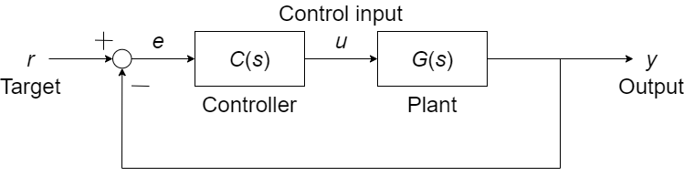
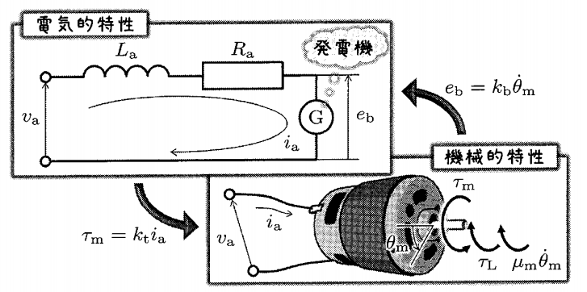
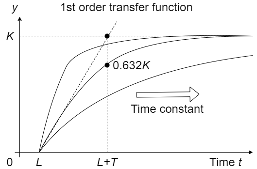

DCモータの速度制御
やること
- MATLABから現実世界を動かす
- とりあえず繋いでみる，回してみる
- 制御がないと何がダメ？
- フィードバック制御について
- 運動方程式を立てる（伝達関数を求める）
- コントローラをつくる（P制御，PI制御）
MATLABから現実世界を動かす
とりあえず繋いでみる
↓制御対象
制御がないと何がダメ？
電圧 vs 回転数がわかれば目標回転数を出せるはず
$$\dot{\theta}(t)=\omega(t)=\frac{1}{k_E} v(t);~~k_E は逆起電力定数$$
実際には上手く行かない
- 外乱に対して無力
- 整定までの時間がシステムに依存する
フィードバック制御を行うことで解決できる
フィードバック制御
プラント$G(s)$の応答を使って入力$u$を決める方法
- 伝達関数$G(s)$をつくる
- $G(s)$のパラメータを求める（プラント同定）
- コントローラ$C(s)$を決める
- （コントローラの再調整）
電気モータのモデル化
電気的特性と機械的特性
$$ \left\{ \begin{array}{rcl} v_a &=& R_a i_a + L_a \frac{di_a}{dt} + e_b \\ e_b &=& k_b \dot{\theta}_m \\ J_m \ddot{\theta}_m &=& \tau_m - \tau_L - \mu_m \dot{\theta}_m \\ \tau_m &=& k_t i_a \end{array} \right. $$
モータの運動方程式
$L_a \frac{di_a}{dt} \approx 0$として近似（電気的反応は機械的反応に比べて十分速い）
$$ J_m \ddot{\theta}_m + \bar{\mu}_m \dot{\theta}_m + \tau_L = \frac{k_t}{R_a} v_a $$
ギヤードモータの場合
$$ \bar{J}_g \ddot{\theta}_g + \bar{\mu}_g \dot{\theta}_g + \tau _{gL} = \frac{\bar{k_t}}{R_a} v_a $$ ギヤードモータでも運動方程式の形は同じ．伝達関数
電圧→角度（2次遅れ系）
$$ \frac{\Theta}{V_a} = \frac{\bar{k_t}}{R_a \bar{J}_g s^2 + R_a \bar{\mu}_g s} $$
電圧→角速度（1次遅れ系）
$$ \frac{\Omega}{V_a} = \frac{\bar{k_t}}{R_a \bar{J}_g s + R_a \bar{\mu}_g} = \frac{K}{Ts + 1} $$
１次遅れ伝達関数の時間応答
$T: 時定数$
$L: むだ時間$
- 1次遅れ系ではステップ応答の$t=0$での接線と$K$が交わる時間が時定数$T$となる．
- $t=T$のとき，$y(T)=0.632K$
実際にプラント同定をしてみる（$K$と$T$を求める）
MATLAB/Simulinkで確認
PI(D)制御系
$$C _{Parallel}(s) = \left(K_P + \frac{1}{s} K_I + K_D s \right) E(s)$$ $$C _{Ideal}(s) = K_P \left(1 + \frac{1}{T_I s} + T_D s \right) E(s)$$
パラメータの決め方
- （Ziegler-Nicholsの）限界感度法
- （Ziegler-Nicholsの）過渡応答法
- CHR法
CHR法のパラメータ
| $K_P$ | $T_I$ | $T_D$ | |
|---|---|---|---|
| P | $0.3/RL$ | $-$ | $-$ |
| PI | $0.35/RL$ | $1.2T$ | $-$ |
| PID | $0.6/RL$ | $T$ | $0.5L$ |
シミュレーションで確認
$\Downarrow$
実機で確認
参考資料
ロータリーエンコーダの動作